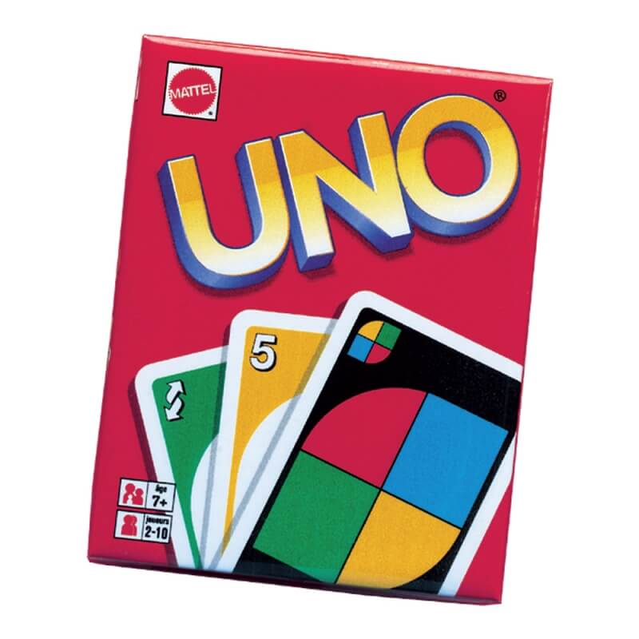
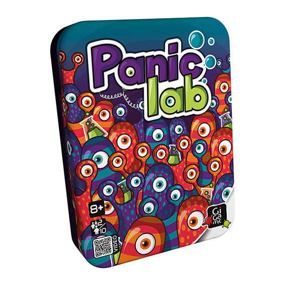
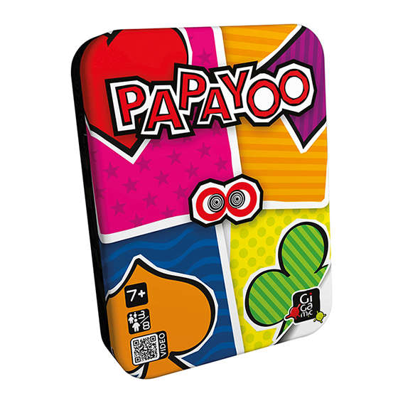
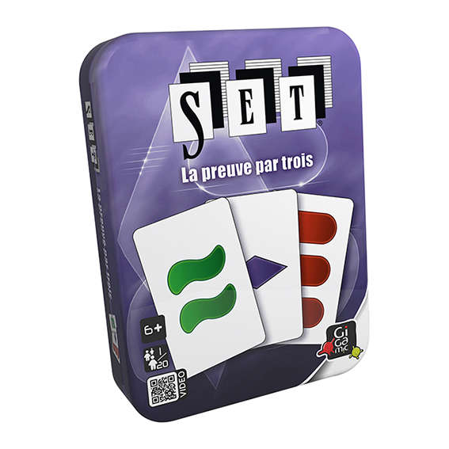
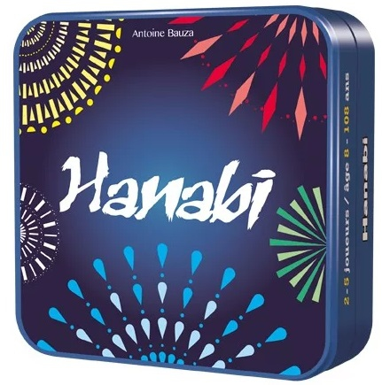
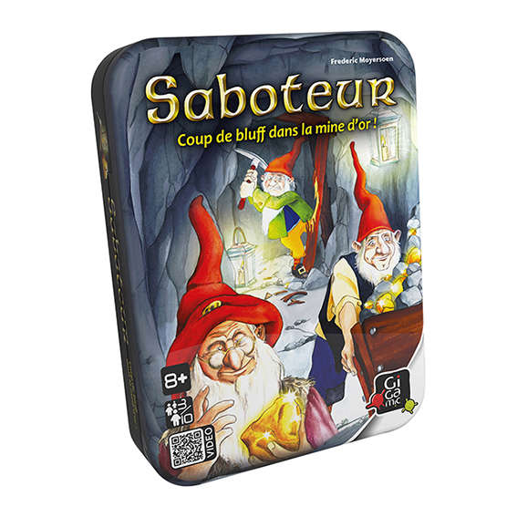
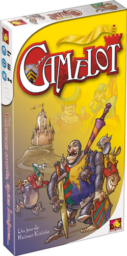

Vous trouverez ici une selection de nos jeux de moins de 40 minutes
Uno

Age : 7 ans et plus
Nb de joueurs : 2 à 10
Temps de partie : 30 minutes
Facile à apprendre, vous serez vite gagné par la frénésie d’UNO,le plus célèbre des jeux de cartes familiaux.
Pour gagner débarrassez vous de toutes vos cartes, utilisez les cartes action pour piéger vos adversaires et
lorsqu’il ne vous reste plus qu’une seule carte en main n’oubliez pas de dire uno.
Panic Lab

Age : 8 ans et plus
Nb de joueurs : 2 à 10
Temps de partie : 20 minutes
Des amibes se sont échappées et courent dans tous les sens, il faut vite les rattraper ! Les joueurs jouent tous
ensemble et en même temps. Lancez les 4 dés très spéciaux qui vous indiqueront quel laboratoire a laissé s’échapper
l’Amibe et à quoi elle ressemble. Le premier qui désigne la bonne amibe gagne un point. Mais attention, ces petites
bêtes ne se laissent pas attraper facilement: elles se cachent sous les grilles d’aération et peuvent subir des
mutations!
Sang froid, sens de l’observation et rapidité sont les clefs d’un laboratoire bien ordonné.
Papayoo

Age : 7 ans et plus
Nb de joueurs : 3 à 8
Temps de partie : 30 minutes
Il n’y a ici ni valets, ni reines, ni rois, mais une cinquième couleur, dite Payoo, plus un drôle de dé.
Comment marquer… le moins de points possible ? En évitant de récolter ces fichus Payoos et surtout le Papayoo, ce
satané 7 dont la couleur change (maudit dé !) à chaque manche…
Vous n’êtes pas satisfait de la donne ? Pas grave, vous donnez des cartes à votre gauche avant de commencer ; mais
faites les bons choix, car elles seront remplacées par le «cadeau» venant de droite… Ensuite vous jouez la donne mais
sans atouts et sans scrupule, pas sûr que le meilleur gagne !
Papayoo, une alternative vivifiante à tous les jeux de cartes traditionnels.
Set

Age : 6 ans et plus
Nb de joueurs : 1 à 20
Temps de partie : 30 minutes
Le but du jeu consiste à observer les cartes exposées sur la table pour être le plus rapide à identifier un SET.
Chaque carte présente des symboles qui combinent 4 caractéristiques : COULEUR (rouge, vert ou mauve), FORME (ovale,
vague ou losange), NOMBRE (un, deux ou trois symboles), REMPLISSAGE (plein, hachuré ou vide).
Un SET est un ensemble de 3 cartes dont chacune des 4 caractéristiques est soit totalement identique, soit totalement
différente aux 2 autres cartes.
Hanabi

Age : 8 ans et plus
Nb de joueurs : 2 à 5
Temps de partie : 20 minutes
Dans ce jeu coopératif jamais vu, les joueurs œuvrent ensemble pour tirer de beaux feux d'artifice.
Mais comme les poudres, les mèches et les fusées sont complètement mélangées, chaque joueur doit tenir ses cartes à
l'envers ! Personne ne voit donc son propre jeu...
Il faudra donc informer intelligemment ses coéquipiers et mémoriser les informations reçues.
L'entraide est la clé pour réaliser un spectacle inoubliable et éviter les huées de la foule...
Saboteur

Age : 8 ans et plus
Nb de joueurs : 3 à 10
Temps de partie : 30 minutes
Saboteur allie bluffs, complicités et retournements : une véritable pépite !
Vous jouez soit le rôle d'un chercheur d'or qui creuse de profondes galeries, soit le rôle d'un saboteur qui entrave
les recherches. Mais parmi les autres joueurs, vous ignorez qui est chercheur et qui est saboteur ! Essayez de le deviner
pour savoir qui soutenir...
Camelot

Age : 10 ans et plus
Nb de joueurs : 2 à 5
Temps de partie : 30 minutes à 1 heure
Le grand tournoi de Camelot bat son plein. Battez-vous avec toutes sortes d'armes, obtenez les faveurs des plus belles dames.
Distinguez-vous dans cinq joutes et remportez la partie !